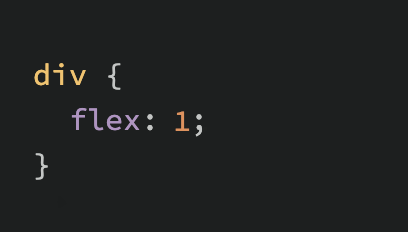

Introducere
Sa analizam putin mai atent ce s-a intamplat atunci cand ai aplicat flex: 1 pe acele elemente flex in lectia anterioara.
Sintaxa prescurtata a flex
Declaratia flex este de fapt o prescurtare pentru trei proprietati pe care le poti seta pe un element flex. Aceste proprietati influenteaza modul in care elementele flex isi ajusteaza dimensiunea in interiorul containerului lor. Ai mai vazut proprietati prescurtate pana acum, dar nu le-am definit oficial.
In acest caz, flex este de fapt o prescurtare pentru flex-grow, flex-shrink si flex-basis.
In captura de ecran de mai sus, flex: 1 echivaleaza cu: flex-grow: 1, flex-shrink: 1, flex-basis: 0.
Foarte des, vei vedea sintaxa prescurtata a flex definita cu o singura valoare. In acest caz, acea valoare este aplicata proprietatii flex-grow. Astfel, atunci cand am aplicat flex: 1 pe div-urile noastre, de fapt specificam flex: 1 1 0.
Flex-grow
flex-grow asteapta un singur numar ca valoare, iar acest numar este folosit ca „factor de crestere” al elementului flex. Cand am aplicat flex: 1 fiecarui div din containerul nostru, le spuneam tuturor sa creasca in aceeasi proportie. Rezultatul este ca toate div-urile ajung sa aiba exact aceeasi dimensiune. Daca, in schimb, aplicam flex: 2 doar unui singur div, atunci acel div ar creste de 2 ori mai mult decat celelalte.
In exemplul urmator, sintaxa prescurtata a flex contine valori pentru flex-shrink si flex-basis, specificate cu valorile lor implicite.
Flex-shrink
flex-shrink este similar cu flex-grow, dar seteaza „factorul de micsorare” al unui element flex. flex-shrink se aplica doar daca dimensiunea tuturor elementelor flex este mai mare decat containerul lor parinte. De exemplu, daca cele 3 div-uri de mai sus ar avea o declaratie de latime de width: 100px, iar .flex-container ar fi mai mic de 300px, div-urile ar trebui sa se micsoreze pentru a se potrivi.
Factorul de micsorare implicit este flex-shrink: 1, ceea ce inseamna ca toate elementele se vor micsora uniform. Daca nu vrei ca un element sa se micsoreze, poti specifica flex-shrink: 0;. De asemenea, poti seta valori mai mari pentru ca anumite elemente sa se micsoreze mai mult decat altele.
Iata un exemplu. Observa ca am modificat si flex-basis din motive care vor fi explicate in curand. Daca micsorezi fereastra browserului, vei observa ca .two nu devine mai mic decat latimea data de 250px, chiar daca regula flex-grow ar specifica ca fiecare element ar trebui sa fie de aceeasi dimensiune.
O implicatie importanta de observat aici este ca atunci cand specifici flex-grow sau flex-shrink, elementele flex nu respecta neaparat valorile tale date pentru width. In exemplul de mai sus, toate cele 3 div-uri au o latime de 250px, dar cand parintele lor este suficient de mare, ele cresc pentru a umple spatiul. In mod similar, cand parintele este prea mic, comportamentul implicit este ca acestea sa se micsoreze pentru a se potrivi. Acesta nu este un bug, dar poate fi un comportament confuz daca nu te astepti la el.
Flex-basis
flex-basis seteaza dimensiunea initiala a unui element flex, astfel incat orice crestere (flex-grow) sau micsorare (flex-shrink) sa inceapa de la acea dimensiune de referinta. Valoarea prescurtata implicita este flex-basis: 0%.
Motivul pentru care a trebuit sa o modificam la auto in exemplul cu flex-shrink este ca, daca flex-basis este setat la 0, acele elemente ar ignora latimea specificata (width) si totul s-ar micsora uniform. Folosirea valorii auto pentru flex-basis spune elementului sa verifice daca exista o declaratie de latime (width: 250px).
Ce este flex: auto?
Daca ai observat, am mentionat o noua sintaxa prescurtata, flex: auto, in nota anterioara. Totusi, nu am introdus-o complet. flex: auto este una dintre variantele prescurtate ale proprietatii flex. Cand auto este definit ca cuvant cheie in contextul flex, acesta echivaleaza cu valorile: flex-grow: 1, flex-shrink: 1 si flex-basis: auto, sau, folosind sintaxa prescurtata: flex: 1 1 auto.
Un aspect important este ca flex: auto nu este valoarea implicita atunci cand folosesti sintaxa prescurtata flex, chiar daca numele sau contine „auto”, ceea ce poate fi putin confuz la inceput. Vei intalni flex: auto si vei invata mai multe despre utilizarea sa cand vei parcurge sectiunea de exercitii.
Cel mai probabil nu vei folosi valori complexe pentru flex-grow, flex-shrink sau flex-basis. De obicei, vei utiliza declaratii simple, precum:
- flex: 1; → pentru a face div-urile sa creasca uniform.
- flex-shrink: 0; → pentru a impiedica anumite div-uri sa se micsoreze.
Exista situatii in care poti crea layout-uri mai avansate, in care anumite coloane sunt proportionale unele fata de altele. De aceea, este util sa stii ca poti folosi valori mai variate, desi acest lucru este relativ rar in practica.